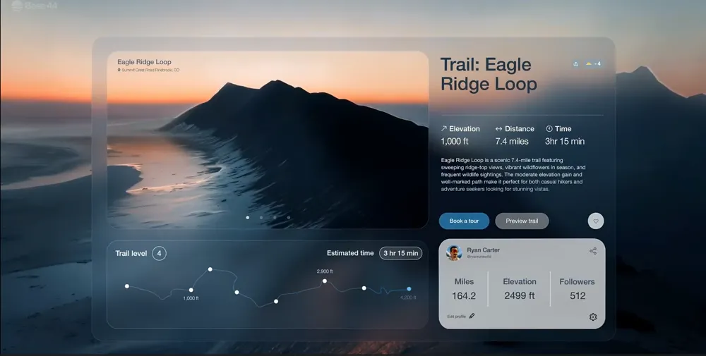
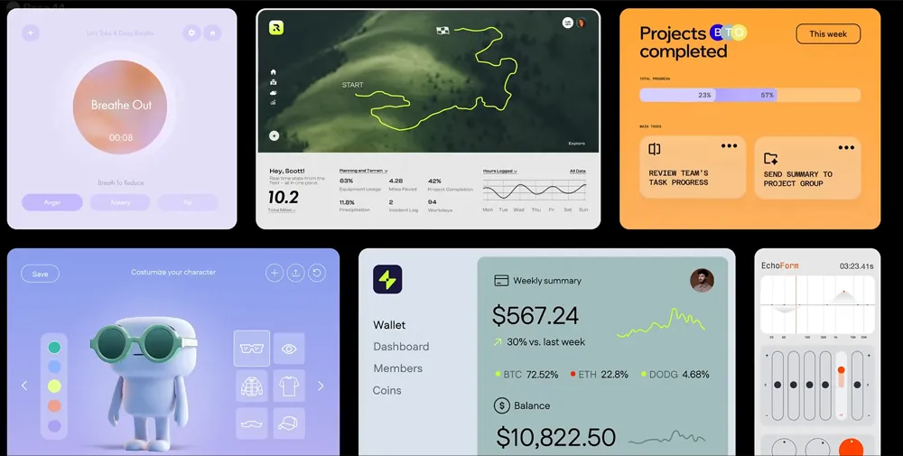
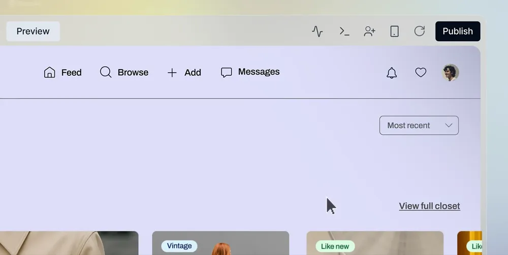
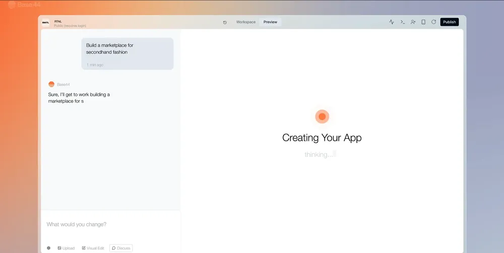

Motion graphics
de 60 segundos.
para o OutBuyCenter.
Vídeo animado de 60s
para se diferenciar do
mercado Eprocurement.
Vídeo animado com alta retenção e conversão. A mesma peça pode ser utilizada em campanhas de anúncio e em eventos presenciais.
Do roteiro à exportação,
com método.
Quatro frentes para sair do roteiro e chegar ao vídeo pronto, sem nenhuma etapa solta no caminho.
Roteiro e locução
Roteiro e copy persuasiva para 60 segundos — gancho, problema, solução e chamada. Locução em IA, voz em português.
Style frame
Um a dois quadros-chave no estilo final — paleta, tipografia em tela, grid e profundidade — aprovados antes de animar.
A tela em movimento
Animação de elementos de UI conceituais do OutBuyCenter — transições, easing e ritmo sincronizados à locução e à trilha.
Som e exportação
Trilha licenciada, sound design e mixagem. Exportação em Full HD, nos formatos para mídia paga e para o telão do evento.
Limpo, tecnológico
e em movimento.
As referências mostram o tipo de execução que buscamos: o ritmo da animação, como a interface entra na tela, a tipografia que destaca a palavra certa. A peça usa a paleta institucional do OutBuyCenter — as referências são do Base44 só pela execução.
- Paleta institucional do OutBuyCenter
- Tipografia cinética que destaca a palavra-chave
- Interface flutuante com profundidade e gradientes sutis
- Transições fluidas — cada tela vira a próxima sem corte seco




Um vídeo,
do roteiro ao arquivo final.
Uma animação de 60 a 75 segundos sobre o OutBuyCenter, com tudo feito aqui dentro — sem nenhuma etapa terceirizada.
Locução em IA e trilha licenciada já entram no valor. As gravações de tela e a marca vêm da Outplan.
O que está incluso
- Roteiro + texto de locução (com aprovação)
- Locução em IA, voz em português
- Direção de arte / style frame (com aprovação)
- Storyboard completo (com aprovação)
- Animação completa da peça
- Trilha sonora licenciada + sound design (SFX)
- 2 rodadas de revisão
- Exportação final em 16:9 (Full HD)
Investimento.
OutBuyCenter
- Animação completa de 60–75s, formato 16:9
- Roteiro, direção de arte e storyboard (com aprovação)
- Locução em IA + trilha e SFX
- 2 rodadas de revisão
- Exportação final em Full HD
- Prazo de 30 dias
9:16
- Reenquadramento e reanimação para vertical
- Ideal para Reels, Stories e TikTok
- Mesma locução e trilha do master
- Entregue junto com o vídeo principal
Quatro fases,
três pontos de aprovação.
Roteiro &
direção de arte
Roteiro, texto de locução e o style frame no estilo final. Duas aprovações antes de animar.
Storyboard
Enquadramentos e ritmo de toda a peça, cena a cena. Aprovação do roteiro visual.
Produção
Locução em IA, animação, trilha sonora e efeitos.
Revisão
e entrega
Duas rodadas de ajuste e exportação dos masters finais. Aprovação final.
Espaço para crescer
quando fizer sentido.
O valor considera uma peça única em 16:9. À medida que a campanha evoluir, estas frentes podem ser orçadas separadamente — sem pressa e sem empurrar nada agora.
Animação de 60 segundos,
pronta para anúncio e evento.
Trinta dias do aceite à entrega. Quando você aprovar, começamos pelo roteiro.